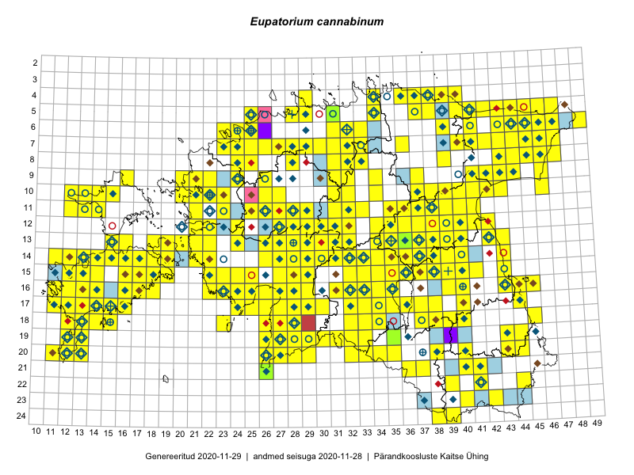

Eupatorium cannabinum
Uuendatud: 2016-12-01
Kaardile koondatud taksonid: Eupatorium cannabinum L.

Kaart põhineb 439 kirjel.
Kuvatud viited 20 esimesele andmebaasikirjele, ülejäänud PlutoFis
- Toomas Kukk, Eerik Leibak: 2015-08-09: 13-15: ala
- Toomas Kukk, Eerik Leibak: 2015-08-09: 14-15: ala
- Toomas Kukk, Peedu Saar: 2015-08-05: 20-11: ala
- Tiit Hallikma, Toomas Kukk: 2015-07-21: 05-45: ala
- Ott Luuk, Toivo Sepp: 2015-07-29: 09-32: ala
- Ott Luuk, Peedu Saar: 2015-07-27: 11-35: ala
- Peedu Saar: 2015-07-14: 15-38: ala
- Peedu Saar: 2015-07-15: 15-39: ala
- Toomas Kukk, Peedu Saar: 2014-07-09: 08-44: ala
- Peedu Saar, Liina Oja: 2015-06-09: 17-27: ala
- Peedu Saar, Liina Oja: 2015-06-09: 17-28: ala
- Peedu Saar, Liina Oja: 2015-06-10: 14-30: ala
- Peedu Saar, Liina Oja: 2015-06-10: 14-31: ala
- Peedu Saar, Liina Oja: 2015-06-12: 13-35: ala
- Toomas Kukk, Eerik Leibak: 2015-07-29: 16-45: ala
- Peedu Saar, Sander Laherand: 2015-05-31: 07-47: ala
- Peedu Saar, Liina Oja: 2015-07-20: 08-44: ala
- Peedu Saar, Liina Oja: 2015-07-21: 06-44: ala
- Peedu Saar, Liina Oja: 2015-07-22: 08-45: ala
- Ott Luuk, Toivo Sepp: 2015-07-12: 10-31: ala